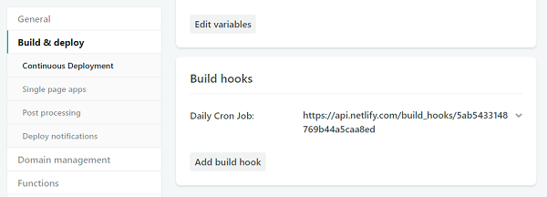

Scheduling Jekyll posts with Netlify and GitHub Actions
Using a GitHub Action cron job to schedule Netlify builds for static site generated blog posts.
Last year, I wrote about how to schedule Jekyll posts using Netlify and AWS Lambda[^1]. I used that approach from the moment I wrote that blog post up until today. What changed? In the past year, GitHub has introduced GitHub Actions[^2], a way to run container jobs triggered by different GitHub events. One of those events is a schedule defined in start cron format. So now instead of using AWS to schedule a cron job to deploy my static site, I use a GitHub Action.
Configuring Jekyll
By default, Jekyll generates all blog posts in the _posts directory regardless of the publish date associated with each. That obviously doesn’t work well when you want to schedule posts to be published in the future, so the first step is to configure Jekyll to ignore future posts. To do so, add this key to Jekyll’s _config.yml:
future: false
Setting future to false tells Jekyll to skip any posts with a publish date in the future. You can then set the date field in the front matter of a post to a future date and know that the post will not be generated until then, like this:
---
layout: post
title: "My future post"
date: 2075-01-01 00:00:00
---
This post will be published on January 1, 2075, so it will not be built by Jekyll until that point in time. I find it easier to schedule all posts for midnight so that whenever the site gets published, so long as the date matches, the post will always be generated.
Generating a Netlify build hook
One of the things I like about Netlify is that you can trigger a new site build whenever you want, either manually or programmatically. Netlify has a useful feature called a build hook[^3], which is a URL that triggers a new build. To generate a new build hook, go to the Netlify dashboard for your domain and go Site Settings and then to the Build & Deploy page. When you scroll down, you’ll see a section for Build Hooks. Click “Add build hook”, give your new hook a name (something like “Daily Cron Job” would be appropriate here), and choose the branch to build from.

You’ll be presented with a new URL that looks something like this:
https://api.netlify.com/build_hooks/{some long unique identifier}
Whenever you send a POST request to the build hook, Netlify will pull the latest files from the GitHub repository, build the site, and deploy it. This is quite useful because you don’t need to worry about authenticating against the Netlify API; you can use this URL without credentials. Just make sure to keep this URL a secret. You can see the URL in your list of build hooks on the same page.

(Don’t worry, the build hook URL in the screenshot has already been deleted.)
Storing the build hook as a GitHub secret
Along with GitHub Actions, GitHub introduced a new feature that allows you to store secrets[^4] for each repository. Each repository has its own secret store that allows anyone with write access to store key-value pairs of sensitive information. Each key is written once and is never shown in the UI again but you can read that information from within a GitHub workflow file.
To find the secret store for your repository, click on the Settings tab at the top of the repository page, then select Secrets from the left menu. Type a name for your secret (for the purposes of this post, I used netlify_build_url) and paste in the value. Click the Add Secret button to store the secret.
With the Netlify build hook stored safely in the secret store, it’s time to create the GitHub workflow file.
Setting up the GitHub Workflow
GitHub Actions are triggered by workflows[^5] defined within your GitHub repository. Workflow files are defined in YAML format and must be stored in the .github/workflows folder of your project for GitHub to automatically detect them. An action starts up a container or virtual machine and runs any number of commands on it. You can choose to use MacOS, Windows, or Ubuntu environments to run the commands. You only need a way to make HTTP requests in order to trigger the Netlify build hook, so the Ubuntu environment (with curl available) is an easy choice.
Each workflow is triggered by one or more events specified by the on key. To create a cron job, define the schedule array and include at least one object containing a cron key. For example:
name: Netlify Deploy
on:
schedule:
- cron: "0 15 * * *"
This workflow is triggered at 3pm UTC every day of the week. All of the POSIX cron syntax is supported in workflows, making it easy to translate existing cron jobs.
The next step is to set up a job to be run on Ubuntu. To do that, create a jobs object. Here’s an example:
name: Netlify Deploy
on:
schedule:
- cron: "0 15 * * *"
jobs:
build:
runs-on: ubuntu-latest
steps:
- name: Trigger Netlify Hook
run: curl -X POST ${{ secrets.netlify_build_url }}
Each property of the jobs object is a separate job to be run (in order). The name of the job doesn’t really matter as long as it’s unique (build is a common job name). The runs-on property specifies the environment to run the command and steps is an array of commands to execute in the environment. There’s only one step in this example, which is triggering the Netlify hook. The name property should be set to something meaningful because it is displayed in the GitHub interface. The run property is the actual command to run. In this case, the command is a curl POST request to a specified URL, which is represented by a secret value. When the job executes, the Netlify deploy is triggered.
Conclusion
I switched this website over to use this GitHub Action approach as soon as I got access to the GitHub Actions beta. So far, I haven’t seen any difference in the end result (publishing my blog daily) and being able to modify the cron job within the website repository streamlines my work. I currently have this website being autogenerated every morning, and that includes pulling in new data via various APIs and publishing future-dated posts.
While I enjoyed experimenting with AWS Cloudwatch and Lambdas for scheduling future posts, I now feel that GitHub Actions is a better solution.